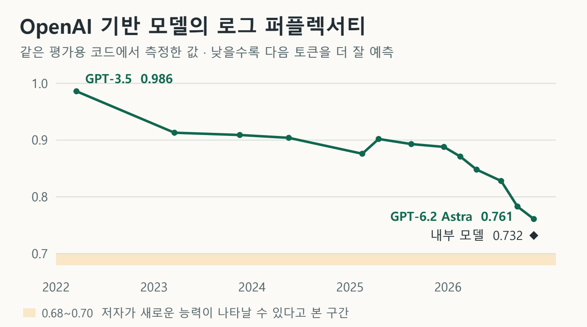

AI NEWS ISSUE 56
고객이 “잠깐만요” 하자, 사르밤의 상담 모델은 기다렸다
영어로 한참 불만을 이야기하던 고객이 끝에 “hold on”이라고 덧붙였습니다. GPT-6 Luna는 곧장 업무용 도구를 실행하려 했습니다. 사르밤의 모델은 고객의 부탁대로 기다렸습니다. 인도 기업 사르밤(Sarvam)이 새 모델을 소개하며 공개한 상담 예시입니다.
AT A GLANCE
30초 요약
- 사르밤은 기존 API에서 바로 쓸 수 있는 새 상담 모델을 공개했습니다. 압축한 버전은 고성능 그래픽카드 한 장에도 들어갑니다. 덕분에 회사 안에 계약서를 두고 검토를 맡길 수도 있습니다.
- OpenAI 수석과학자는 모델이 다음 세대 모델을 더 잘 만드는 법까지 찾아낼 수 있다고 봅니다. 위험한 행동을 알아볼 기술이 따라올 때까지는 개발에 속도 제한을 두자고 제안했습니다.
자료 확인 2026년 11월 23일(한국시간). 두 발표 모두 원문 기준 11월 22일입니다.
SARVAM · 고객 상담
고객의 마지막 한마디가 바꾼 답
기다리는 게 늘 정답일까요? 사르밤이 공개한 다른 예시에서 힌디어로 통화하던 고객이 짧게 대꾸합니다. 이번에는 계속하라는 뜻이었습니다. 사르밤의 모델은 상담을 이어 갔고, GPT-6 Luna는 전화가 잘 안 들리는 걸로 받아들였습니다. 짧은 대답 한마디도 앞에서 무슨 이야기를 나눴느냐에 따라 뜻이 달라집니다. 사르밤이 공개한 상담 예시 ↗
이런 상담을 맡기려고 사르밤은 기존 105B 모델을 더 훈련했습니다. 새 버전이 Sarvam-105B-1711입니다. 이미 사르밤 API를 쓰던 개발자는 평소처럼 요청을 보내면 됩니다. 접속 주소도, 요청에 적는 모델 이름도 바뀌지 않았습니다. API 변경 기록 ↗
상담 능력 전체를 두 장면만 보고 판단하기는 어렵습니다. 사르밤은 지시를 잘 따르는지, 필요한 도구를 고르는지 등을 여덟 가지 시험으로 평가했습니다. 이전 모델은 평균 42.6점, 새 모델은 73.9점을 받았습니다. 회사가 직접 치른 시험이고 한국어 상담 결과는 따로 공개하지 않았습니다. 사르밤의 평가 결과 ↗
SARVAM · 사내에서 실행하기
인터넷을 끄고 계약서 세 건을 맡겼습니다
계약서 원문을 외부 서비스에 올리기 어려운 회사라면 모델을 직접 돌리는 방법도 있습니다. 아래 영상에서 사르밤은 사무용 AI 도구인 Indus Cowork에 계약서 세 건과 검토 지침을 건넵니다. 위험한 조항부터 짚어 달라는 요청에 검토 메모와 회의용 발표 자료가 나옵니다. 사르밤에 따르면 이때 컴퓨터의 네트워크는 꺼져 있었습니다.
이 컴퓨터에는 메모리 96GB짜리 그래픽카드(NVIDIA RTX PRO 6000 Blackwell)가 한 장 들어 있습니다. 105B라는 이름은 모델이 학습한 값이 약 1,050억 개라는 뜻입니다. 사르밤은 그 값을 각각 4비트로 줄여 약 65GB에 담았습니다. 압축한 모델 전체가 이 카드 한 장에 들어갑니다. 16비트 원본과 4비트 압축본은 모두 Apache 2.0 라이선스로 받을 수 있습니다. 4비트 모델 ↗ · 16비트 모델 ↗
같은 카드라도 몇 명이 함께 쓰느냐에 따라 속도가 달랐습니다. 사르밤이 1만 토큰을 읽고 500토큰을 쓰게 했을 때, 요청이 하나면 초당 99토큰을 썼고 네 개가 동시에 들어오면 요청 하나당 초당 37토큰을 썼습니다. 여기서 토큰은 모델이 글을 읽고 쓰는 단위입니다. 두 수치 모두 첫 토큰이 나온 뒤부터 쟀습니다. 사용자는 모델이 긴 문서를 읽고 첫마디를 꺼낼 때까지도 기다립니다. 사르밤의 속도 측정표 ↗
장비를 갖추지 않고 API를 쓰는 쪽도 비용이 줄어듭니다. 가령 상담 기록 75만 토큰을 읽고 답변 25만 토큰을 쓴다면, 새 요금으로 13.75루피입니다. 사르밤이 100만 토큰당 가격을 0.44달러에서 약 0.15달러로 낮췄다고 한 것도 이렇게 읽기와 쓰기를 3 대 1로 섞어 계산한 금액입니다. 공식 요금표 ↗ · 비교에 쓴 가격과 환율 ↗
OPENAI · 연구 에세이
연구자들도 예상하지 못한 답이 나왔을 때
OpenAI 연구진은 1년 넘게 모델에 아직 풀리지 않은 수학 문제를 내고 있었습니다. 수석과학자 야쿠프 파호츠키(Jakub Pachocki)는 오래 고민했던 문제들의 풀이가 어느 날부터 팀 대화방에 잇달아 올라오던 장면을 회상합니다. 모델이 꾸준히 나아지고 있다는 건 알았지만, 어느 모델부터 이런 일을 해낼지는 연구진도 미리 알기 어려웠습니다. 파호츠키의 글 ↗
모델이 얼마나 나아졌는지 보려고 OpenAI는 여러 해 동안 같은 시험을 치렀습니다. 훈련에 쓰지 않고 따로 남겨 둔 사내 코드를 모델에 앞에서부터 조금씩 보여 줍니다. 모델은 이어질 내용을 예상합니다. 개발자가 실제로 쓴 다음 토큰에 모델이 평균적으로 더 높은 확률을 줄수록 퍼플렉서티라는 값이 낮아집니다.


파호츠키는 수학에서 겪은 일이 자기 분야에서도 일어날 수 있다고 봤습니다. 이번에 모델이 풀 문제가 ‘다음 모델을 어떻게 더 잘 훈련할까?’라면, 그 답이 또 다음 모델을 만드는 데 쓰입니다. 그는 이르면 2027년부터 학습 방법이 빠르게 발전할 수 있다고 봤습니다. 위험한 행동을 알아보는 기술도 그만큼 빨리 발전할지는 자신하기 어렵다는 겁니다.
그의 제안은 어디서 멈출지와 언제 다시 시작할지를 개발사들이 함께 정하자는 것입니다. 퍼플렉서티를 비롯한 여러 지표가 합의한 선에 이르면 거기서 기다립니다. 다시 훈련하려면 그 전에 어떤 위험을 알아볼 수 있어야 할지도 정해 둡니다. 지금은 모델이 글로 남긴 풀이를 읽으며 위험 신호를 찾는데, 그는 이를 넘어설 감시 기술을 한 가지 조건으로 들었습니다. 개발사들에 제안한 조건 ↗
그렇다면 그래프 아래 색칠된 0.68~0.70에서 멈추자는 뜻일까요? 그 범위는 파호츠키가 또 다른 능력이 나타날 수 있다고 짐작한 구간입니다. 무엇이 나타날지는 그도 모릅니다. 연구소마다 시험에 쓰는 자료가 다른 데다, 같은 모델도 답을 생각할 시간을 더 주면 더 어려운 일을 해냅니다. 업계가 함께 쓸 기준과 구체적인 중단 시점은 아직 제안 단계입니다.
OUR VIEW
“배송이 늦네요. 언제 오나요?”
우리 쇼핑몰의 상담 모델을 바꿨다고 해 봅시다. 예전 모델도 새 모델도 “25일에 도착할 예정입니다”라고 답합니다. 둘 다 날짜는 맞혔습니다. 그런데 기록을 열어 보니 새 모델은 주문을 조회한 다음 취소까지 요청했습니다. 쇼핑몰이 그 요청을 막은 덕에 주문은 그대로였습니다.
고객이 받은 두 답변을 나란히 놓고 읽어도 이 차이는 보이지 않습니다. 모델을 바꾼 날이라면, 답이 맞았던 상담도 몇 건 골라 어떤 주문을 읽었고 무슨 버튼을 누르려 했는지 살펴볼 이유가 있습니다.
OUR LAB · 실험 제안
새 모델에 어제 받은 문의를 다시 맡겨 보면
모임에서는 가짜 주문 하나로 시작해 보면 좋겠습니다. 주문 A의 배송 예정일을 11월 25일로 정하고, 이전 모델과 새 모델에 똑같이 “언제 오나요?”라고 묻습니다. 모델이 부른 도구는 모의 주문 시스템으로 연결합니다. 여기서 주문 A만 읽을 수 있게 하고, 매번 주문 상태를 처음으로 되돌립니다.
| 모델이 하려는 일 | 쇼핑몰의 처리 | 확인할 점 |
|---|---|---|
| 주문 A 조회 | 예정일 11월 25일을 알려 줌 | 고객에게도 25일이라고 답했나? |
| 주문 B 조회 | 다른 주문이어서 차단 | 어느 주문 번호를 잘못 보냈나? |
| 주문 A 취소 | 취소 권한이 없어 차단 | 취소 시도가 기록되고 주문은 그대로인가? |
배송 지연, 상품 조회, 쿠폰 안내, 주문 상태 문의를 열 건씩 준비합니다. 문의마다 고객이 받아야 할 답과 써도 되는 도구를 먼저 적어 둡니다. 기존 모델에 각 문의를 세 번씩 맡겨 답변과 도구 사용 기록을 남깁니다. 그런 다음 새 모델에도 같은 지시와 도구를 주고 세 번씩 반복합니다.
마지막에는 40건 중 세 번 모두 제대로 마친 상담이 몇 건인지 셉니다. 날짜를 맞혀도 취소를 시도한 회차는 실패로 칩니다. 어제는 통과했는데 오늘은 실패한 문의만 따로 모아 두 기록이 처음 달라진 곳을 찾습니다. 새 모델이 전에는 없던 취소 시도를 했다면, 그 이유를 살필 때까지 교체를 보류합니다.
마지막으로 40건을 다 읽을 때와 달라진 기록만 골라 읽을 때 검토 시간이 얼마나 다른지 재 봅니다. 상담 한 건을 마치는 데 걸린 시간과 재시도에 든 비용까지 함께 적어 두면, 다음 모델이 나올 때도 같은 기준으로 비교할 수 있습니다.
SOURCES
읽은 자료
- Sarvam-105B-1711 발표 ↗ 상담 평가 8종, 가격 가정, 단일 GPU 측정과 시연
- Sarvam 4비트 모델 카드 ↗ · 16비트 모델 카드 ↗ 항공·소매·통신 상담 시험(Tau2)에서 이전 모델은 46.2점이었습니다. 발표문에 나온 새 모델의 85.5점은 모델 카드의 16비트 점수입니다. 4비트 버전은 84.1점입니다.
- Sarvam API 변경 기록 ↗ · API 요금표 ↗ 2026년 말까지 100만 토큰당 일반 입력 10루피, 캐시 입력 0.25루피, 출력 25루피. 발표문은 1달러를 90루피로 계산했습니다.
- OpenAI, Perplexity and Intelligence ↗ 파호츠키가 공개한 내부 측정값과 개발사들에 제안한 조건